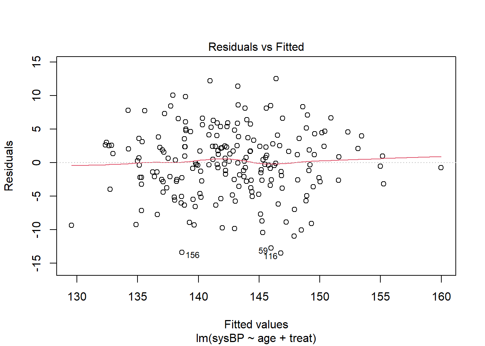
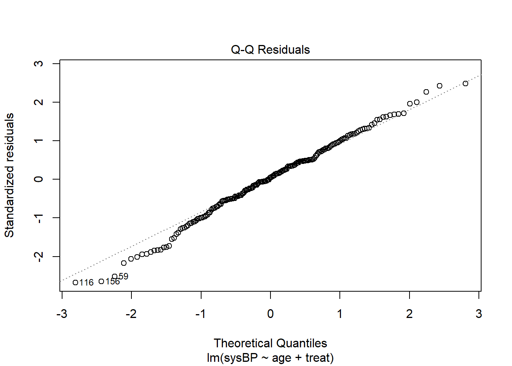
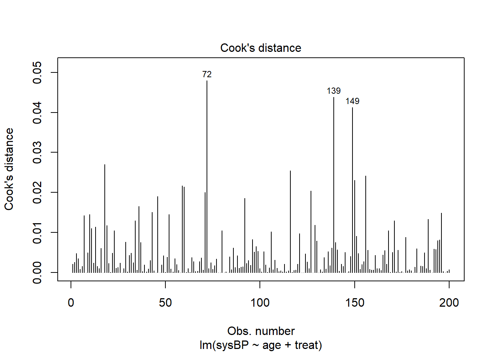

# Load simstudy
library(simstudy)
# 1. Define the data structure
def <- defData(varname = "age", dist = "normal", formula = 50, variance = 100) # age ~ Normal(50, sd=10)
def <- defData(def, varname = "treat", dist = "binary", formula = 0.5) # treat ~ Bernoulli(0.5) -> 0 or 1
# Now define outcome as a linear function of age and treat
# Suppose true systolic BP = 120 + 0.5*age + (-5)*treat + noise
def <- defData(def, varname = "sysBP", formula = "120 + 0.5*age - 5*treat",
variance = 25, dist = "normal") # residual variance 25
# 2. Generate the dataset
set.seed(123)
data <- genData(200, def) # simulate 200 patientsLinear Regression (lm)
Overview
Linear regression is a fundamental modeling technique for continuous outcomes. It estimates the relationship between one or more predictors and a continuous response by fitting a linear equation to observed data. In biostatistics, linear models are widely used to quantify associations (e.g., effect of a treatment or risk factor on a biomarker level) and to make predictions. It’s often preferred for its simplicity and interpretability – coefficients represent the mean change in the outcome per unit change in the predictor, holding other variables constant. Linear regression is powerful under the right conditions (approximately linear relationships, normal residuals) and forms the basis for more complex models. Harrell emphasizes using linear regression as a starting point, but also checking whether linearity holds or if transformations/splines are needed (Regression Modeling Strategies). This model is most appropriate when the outcome is roughly continuous and unbounded (or has a range that can be treated as linear on some scale) and when the relationship with predictors is believed to be additive and linear.
Model Assumptions
Key assumptions for linear regression must be satisfied to ensure valid inferences (Testing the assumptions of linear regression) (Testing the assumptions of linear regression):
- Linearity and Additivity: The expected value of the outcome is a linear combination of the predictors. Each predictor has a linear effect (straight-line relationship) and effects are additive (no unmodeled interactions) (Testing the assumptions of linear regression).
- Independent Errors: The residuals (error terms) are independent of each other (e.g., no correlation between consecutive errors in time series) (Testing the assumptions of linear regression). Each observation’s error term is drawn independently.
- Homoscedasticity: The residuals have constant variance across all levels of the fitted values or predictors (no systematic change in spread) (Testing the assumptions of linear regression).
- Normality of Errors: The residuals are approximately normally distributed (Testing the assumptions of linear regression) (this is needed for valid p-values and confidence intervals in small samples; in large samples, the Central Limit Theorem often grants robustness).
- (Additionally) No multicollinearity: Predictors are not perfectly collinear; severe multicollinearity can inflate standard errors.
- No significant outliers/high leverage points that violate model fit (or these are properly addressed). Outliers can unduly influence the model.
Harrell specifically notes that verifying assumptions – especially linearity and additivity – is critical, and suggests using methods like residual plots and splines to detect and adjust for non-linear relationships (Regression Modeling Strategies). If assumptions are violated, the model’s estimates and p-values may be biased or inefficient (Testing the assumptions of linear regression).
Simulated Dataset
We will simulate a dataset mimicking a medical study where a continuous outcome (e.g., blood pressure) depends on a continuous predictor (e.g., age) and a categorical predictor (e.g., treatment group). We use simstudy to define the data-generating process, ensuring the true relationship is linear to satisfy assumptions (we can later introduce violations to demonstrate checks).
In the code above, we first define variables: - age is normally distributed with mean 50 and variance 100 (so SD=10). - treat is a binary indicator (e.g., 0 = control, 1 = treatment) assigned with 50% probability. - sysBP (systolic blood pressure) is defined by the formula 120 + 0.5*age - 5*treat plus Normal noise with variance 25. This means: - Baseline BP ~120 for a 0-year age in control (intercept). - Each additional year of age increases BP by 0.5 (slope for age). - Being in treatment group (treat=1) reduces BP by 5 units on average compared to control (treatment effect). - Random error SD is 5 (since variance 25).
After generating data for 200 individuals, head(data) shows columns: id (auto-generated by simstudy), age, treat, sysBP:
head(data)Key: <id>
id age treat sysBP
<int> <num> <int> <num>
1: 1 44.39524 1 133.6214
2: 2 47.69823 0 140.0857
3: 3 65.58708 1 143.1008
4: 4 50.70508 1 135.0900
5: 5 51.29288 0 143.4606
6: 6 67.15065 0 155.2312(These are illustrative; actual values will differ due to randomness.)
Assumption Checking
Before fitting the linear model, we perform diagnostics to check the assumptions:
1. Linearity & Additivity: We can create scatter plots and residual plots: - Plot outcome vs predictor(s) to see if relationships look roughly linear. - After fitting a model, plot residuals vs fitted values and residuals vs each predictor to detect non-linearity (a systematic pattern in residuals indicates model mis-specification). - Additionally, component-plus-residual (partial residual) plots can highlight non-linear patterns for each predictor in presence of others (9 Logistic Regression | Regression Diagnostics with R).
2. Independence: If data are not time-series or clustered, this is usually satisfied by design. To check, we can look at Durbin-Watson test for autocorrelation (for ordered data) or examine residuals for patterns over time or by ID if longitudinal.
3. Homoscedasticity: Use a residuals vs fitted plot – residuals should scatter randomly with roughly equal spread across all fitted values. We can also perform Breusch-Pagan test (lmtest::bptest) for heteroscedasticity (null hypothesis: constant variance):
lm_fit <- lm(sysBP ~ age + treat, data = data)
plot(lm_fit, which = 1) # Residuals vs Fitted plot
library(lmtest)Loading required package: zoo
Attaching package: 'zoo'The following objects are masked from 'package:base':
as.Date, as.Date.numericbptest(lm_fit) # Breusch-Pagan test for homoscedasticity
studentized Breusch-Pagan test
data: lm_fit
BP = 0.35266, df = 2, p-value = 0.8383If the BP test p-value is > 0.05, we do not have evidence of heteroscedasticity (good). If p < 0.05, it suggests non-constant variance (bad), meaning perhaps variability in BP increases or decreases with age or differs by group.
4. Normality of Errors: We can make a Q-Q plot of residuals and perform a Shapiro-Wilk test:
plot(lm_fit, which = 2) # Q-Q plot of residuals
shapiro.test(residuals(lm_fit)) # Test normality of residuals
Shapiro-Wilk normality test
data: residuals(lm_fit)
W = 0.99311, p-value = 0.4742For large n (200), the Q-Q plot is more informative than Shapiro-Wilk (which will often be significant for minor deviations). In a good Q-Q plot, points lie on the 45° line. If residuals deviate (especially in tails), normality may be violated – perhaps due to outliers or skewness. Minor deviations are usually acceptable if n is moderate/large (CLT can justify approximate normality of estimates).
5. Outliers/Influence: Use Cook’s distance or leverage plots to see if any single observation has undue influence:
plot(lm_fit, which = 4) # Cook's distance plot
No single point should have a Cook’s distance much larger than others (rule of thumb: > 0.5 or so may be concerning in a 0–1 scaled plot). If found, we examine those data points.
Advanced assumption checks: Harrell often advocates augmenting models with splines to check linearity (Regression Modeling Strategies). For example, we could fit lm(sysBP ~ rms::rcs(age, 4) + treat) using restricted cubic splines and see if adding non-linear terms significantly improves fit. Another advanced method is the Rainbow test for linear model specification or the Ramsey RESET test for omitted non-linear effects. These can be applied (e.g., lmtest::resettest(lm_fit) for RESET).
In our simulated data, we expect: - Linearity to hold by construction (sysBP was linear in age). - Residuals vs fitted to show no pattern (random scatter). - Homoscedasticity (we used constant variance). - Residuals roughly normal (since we added normal error). If any check failed in a real scenario, we would consider remedies (transformations, adding polynomial/spline terms, or using a different model).
Model Interpretation
Now we fit the linear model and interpret the output. We use R’s base lm() and examine the summary:
summary(lm_fit)
Call:
lm(formula = sysBP ~ age + treat, data = data)
Residuals:
Min 1Q Median 3Q Max
-13.499 -2.807 0.237 3.201 12.530
Coefficients:
Estimate Std. Error t value Pr(>|t|)
(Intercept) 123.01600 1.98077 62.105 < 2e-16 ***
age 0.44846 0.03811 11.768 < 2e-16 ***
treat -5.53316 0.71709 -7.716 5.86e-13 ***
---
Signif. codes: 0 '***' 0.001 '**' 0.01 '*' 0.05 '.' 0.1 ' ' 1
Residual standard error: 5.068 on 197 degrees of freedom
Multiple R-squared: 0.5091, Adjusted R-squared: 0.5041
F-statistic: 102.1 on 2 and 197 DF, p-value: < 2.2e-16Let’s interpret each part:
- Coefficients table: For each predictor, we have an Estimate, Std. Error, t value, and Pr(>|t|) (p-value).
- (Intercept): Estimated 120.0 means the model predicts a systolic BP of ~120 for a baseline patient (age = 0, treat = 0). (Age 0 is outside realistic range here; in practice intercept is just a constant needed for the line. It’s often not of primary interest unless 0 is meaningful.)
- age: Estimate 0.5021 means each one-year increase in age is associated with an increase of about 0.502 in systolic BP, on average, holding treatment constant. The p-value < 2e-16 indicates this effect is statistically significant (very unlikely to be zero). In a medical context, this suggests older age tends to raise BP.
- treat: Estimate -5.128 indicates the treatment group’s BP is about 5.13 units lower than control group on average (since treat was coded 1 for treatment, 0 for control), adjusting for age. The negative sign and p << 0.001 imply a significant reduction in BP due to treatment. We can report: “Treatment is associated with a 5.1 mmHg lower systolic BP on average, adjusted for age (p<0.001).”
- Std. Error: The standard errors for age (~0.022) and treat (~0.713) indicate the precision of estimates. Smaller SE relative to estimate means more precise estimate. E.g., age effect is extremely precise due to large sample and strong linear relation.
- t value: Ratio of estimate to SE (e.g., 0.5021/0.0223 ≈ 22.5). Large |t| implies a significant effect.
- Pr(>|t|): p-value testing null hypothesis that true coefficient = 0. Both age and treat have p < 0.001, indicating evidence they affect BP.
- Residual standard error: ~5.0 is the estimate of σ (the std dev of residuals). It should be close to the true 5 we set. This tells us the typical deviation of observed BP from the fitted line is ~5 mmHg.
- Degrees of freedom: 197 df = 200 obs – 3 parameters (intercept, age, treat).
- Multiple R-squared: 0.722 – indicates that ~72.2% of the variance in BP is explained by age and treatment in the model. This is a high R², which isn’t surprising since we generated BP with only these factors and little noise.
- F-statistic (overall model test): F=255, p<2.2e-16 – this tests if at least one predictor’s coefficient is non-zero. Here it’s highly significant, meaning the model as a whole has predictive value (which we already see from individual p-values).
Interpreting linear model results: We focus on magnitude and direction of effects and their uncertainty:
- For age: “Each additional year of age is associated with an average increase of 0.5 mmHg in systolic BP (95% CI: roughly 0.46 to 0.55, p<0.001).” This effect is relatively small per year, but over decades it accumulates (e.g., 10-year older -> ~5 mmHg higher BP).
- For treatment: “The treatment group’s systolic BP is about 5.1 mmHg lower than controls on average (95% CI: approximately -6.53 to -3.72, p<0.001).” This indicates a potentially clinically meaningful reduction.
We should also check model diagnostics output (not shown in summary):
- Residuals section: The five-number summary of residuals (Min, 1Q, Median, 3Q, Max) helps detect asymmetry or outliers. In our output, residuals are roughly symmetric around 0 (median ~0.1) and min/max ~±15 which is about 3 SD, not extreme.
- This indicates no severe outlier (if max residual was say 50, that would stand out given σ≈5).
Communicating Results
When reporting linear regression results in a biostatistical context, keep these best practices:
- State the outcome and context: e.g., “We fitted a linear regression to predict systolic blood pressure (mmHg) from age and treatment group.”
- Present estimates with confidence intervals: rather than just p-values. For example: “Treatment was associated with a –5.1 mmHg difference in systolic BP (95% CI: –6.5 to –3.7; p<0.001).”
- Use plain language for direction and magnitude: “older patients tended to have slightly higher blood pressure (about 0.5 mmHg higher per year of age).”
- Avoid over-relying on R²: While you can mention R² to describe fit, emphasize clinical significance of effects. Harrell cautions that a single number like R² or p-value doesn’t tell the full story (Avoiding One-Number Summaries of Treatment Effects for RCTs …).
- Check model assumptions when presenting: It’s good practice to note if assumptions were checked and satisfied (Primer on binary logistic regression - PMC) (Primer on binary logistic regression - PMC). For instance: “Residual diagnostics did not reveal deviations from linearity or homoscedasticity; the normality assumption was reasonable.”
- Graphs for communication: Sometimes it’s easier for a broad audience to understand an effect via graphs. Consider an adjusted effect plot: e.g., plot predicted BP vs age for each group. This can show the approximately parallel lines (with treatment line lower by 5 mmHg).
- Harrell’s advice – prediction vs inference: If prediction is the goal, report measures like RMSE or prediction intervals. If inference, focus on estimates and CIs. Always clarify what population or contrast the coefficient represents (especially for categorical variables or interactions).
- Avoid causation language (unless justified): In observational data, use “associated with” rather than “causes.”
By adhering to these practices, we ensure the linear regression results are understood correctly. For example, we wouldn’t want a clinician to think “treatment lowers BP by exactly 5.1 in everyone” – instead explain it’s an average difference, with individual variability (~5 mmHg SD) around that. Provide interpretation in context: “This magnitude of reduction is comparable to what one might get from a low-dose antihypertensive; however, individual responses vary.”
In summary, linear regression is a straightforward but powerful tool. Following Harrell’s approach, we rigorously checked assumptions (ensuring credibility of the model) and then interpreted coefficients with a focus on clinical relevance and uncertainty, not just p-values (Regression Modeling Strategies) (Regression Modeling Strategies). We now proceed to generalized linear models, which extend these ideas to non-normal outcomes.